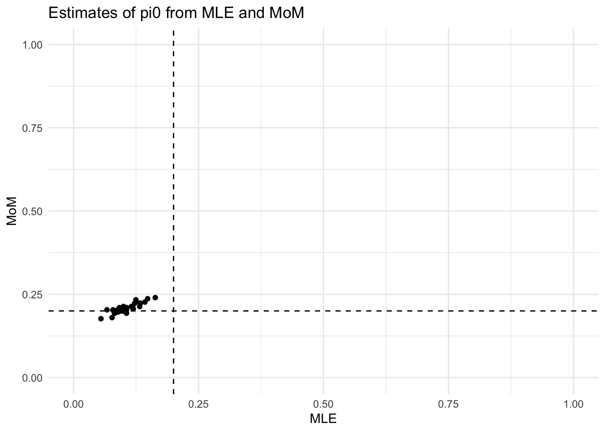
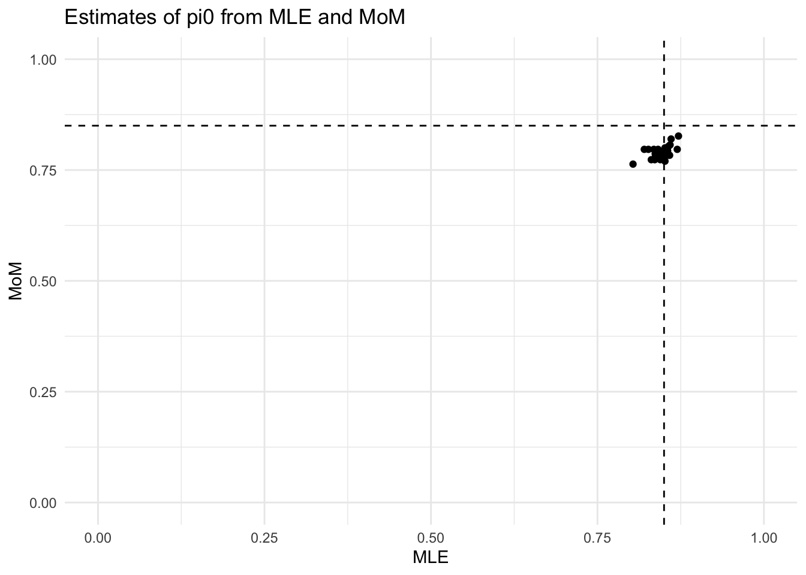

Comparing two estimators for \(\pi_0\)
Ziang Zhang
2025-02-24
Last updated: 2025-02-25
Checks: 6 1
Knit directory: FASHresultsummary/
This reproducible R Markdown analysis was created with workflowr (version 1.7.1). The Checks tab describes the reproducibility checks that were applied when the results were created. The Past versions tab lists the development history.
The R Markdown is untracked by Git. To know which version of the R
Markdown file created these results, you’ll want to first commit it to
the Git repo. If you’re still working on the analysis, you can ignore
this warning. When you’re finished, you can run
wflow_publish to commit the R Markdown file and build the
HTML.
Great job! The global environment was empty. Objects defined in the global environment can affect the analysis in your R Markdown file in unknown ways. For reproduciblity it’s best to always run the code in an empty environment.
The command set.seed(20240507) was run prior to running
the code in the R Markdown file. Setting a seed ensures that any results
that rely on randomness, e.g. subsampling or permutations, are
reproducible.
Great job! Recording the operating system, R version, and package versions is critical for reproducibility.
Nice! There were no cached chunks for this analysis, so you can be confident that you successfully produced the results during this run.
Great job! Using relative paths to the files within your workflowr project makes it easier to run your code on other machines.
Great! You are using Git for version control. Tracking code development and connecting the code version to the results is critical for reproducibility.
The results in this page were generated with repository version 7393e94. See the Past versions tab to see a history of the changes made to the R Markdown and HTML files.
Note that you need to be careful to ensure that all relevant files for
the analysis have been committed to Git prior to generating the results
(you can use wflow_publish or
wflow_git_commit). workflowr only checks the R Markdown
file, but you know if there are other scripts or data files that it
depends on. Below is the status of the Git repository when the results
were generated:
Ignored files:
Ignored: .DS_Store
Ignored: .Rhistory
Ignored: .Rproj.user/
Ignored: analysis/.DS_Store
Ignored: analysis/.Rhistory
Ignored: code/.DS_Store
Ignored: code/.Rhistory
Ignored: code/cpp/.DS_Store
Ignored: code/function/.DS_Store
Ignored: data/.DS_Store
Ignored: data/Iyer/.DS_Store
Ignored: data/expression_data/.DS_Store
Ignored: output/.DS_Store
Ignored: output/Iyer/.DS_Store
Ignored: output/example/.DS_Store
Ignored: output/example/figure/
Ignored: output/expression/.DS_Store
Ignored: output/simulation_pollution/.DS_Store
Ignored: output/simulation_pollution/figure/
Ignored: output/vQTL_correlated/
Ignored: thought_process
Untracked files:
Untracked: analysis/explore_mom_mle.Rmd
Untracked: code/dynamic_eQTL_real/
Untracked: data/dynamic_eQTL_real/
Untracked: output/dynamic_eQTL_real/
Untracked: overdispersion_is_important.R
Unstaged changes:
Modified: analysis/_site.yml
Modified: analysis/dynamic_eQTL_real.rmd
Modified: code/function/functions_simulating.R
Modified: code/function/functions_simulation.R
Modified: code/function/functions_simulation_eQTL_test.R
Modified: output/simulation_dynamic_eQTL/fash_fit_1.RData
Modified: output/simulation_dynamic_eQTL/fash_fit_1_noisy.RData
Modified: output/simulation_dynamic_eQTL/fash_fit_2.RData
Modified: output/simulation_dynamic_eQTL/fash_fit_2_noisy.RData
Modified: output/simulation_dynamic_eQTL/fash_fit_2_noisy_pen.RData
Note that any generated files, e.g. HTML, png, CSS, etc., are not included in this status report because it is ok for generated content to have uncommitted changes.
There are no past versions. Publish this analysis with
wflow_publish() to start tracking its development.
Introduction
Let \(\mathbf{L}\) denote the likelihood matrix of size \(N\times (K+1)\), where \(N\) is the number of data(sets) and \(K+1\) is the number of mixture components. Each entry of \(\mathbf{L}_{ik}\) is the likelihood of the \(i\in[N]\) data under the \(k\in\{0,1,...,K\}\) mixture component.
The MLE of \(\pi_0\) denoted as \(\hat{\pi}_0\) is defined as \[ \hat{\pi}_0 = \arg \max_{\pi_0} \sum_{i=1}^N \log \big[\sum_{k=0}^K \pi_k L_{ik}\big]. \]
The MOM estimator of \(\pi_0\) denoted as \(\tilde{\pi}_0\) is defined as \[ \tilde{\pi}_0 = \frac{1}{N} \sum_{i=1}^N \mathbb{I}(\tilde{Z_i}=0), \] where \(\tilde{Z_i} = \arg \max_{k} L_{ik}\).
Without any model-misspecification, the MLE \(\hat{\pi}_0\) is the best estimator for \(\pi_0\) (in terms of MSE), whereas the MoM estimator \(\tilde{\pi}_0\) is biased.
With model-misspecification, the MLE \(\hat{\pi}_0\) is highly unstable (large variance), whereas the MoM estimator \(\tilde{\pi}_0\) is biased but stable.
Attaching package: 'dplyr'The following objects are masked from 'package:stats':
filter, lagThe following objects are masked from 'package:base':
intersect, setdiff, setequal, unionpred_step_selected <- 8
B <- 30
grid_vec = seq(0, 2, by = 0.5)
sigma = 0.3Without Model-Misspecification
We will write some functions to carry out the simulation. First, we will consider the case when there is no model-misspecification. The data are simulated from mixture of IWP2, and we are fitting the same model.
estimates_higher <- data.frame(pi0_mle = numeric(0), pi0_mom = numeric(0))
progress <- txtProgressBar(min = 0, max = B, style = 3) | | | 0%for (i in 1:B) {
setTxtProgressBar(progress, i)
datasets <- sim_dataset(
pi = c(0.7, 0.15, 0.15),
N = 300,
sigma = sigma,
snr = 2,
seed = i,
pred_step = pred_step_selected,
plot = F
)
L_matrix <- getLmat(datasets, grid_vec, order = 2, num_cores = 4, pred_step = pred_step_selected)
estimates_new <- compute_estimates(L_matrix, penalty = 1)
estimates_higher <- rbind(estimates_higher, estimates_new)
} | |== | 3% | |===== | 7% | |======= | 10% | |========= | 13% | |============ | 17% | |============== | 20% | |================ | 23% | |=================== | 27% | |===================== | 30% | |======================= | 33% | |========================== | 37% | |============================ | 40% | |============================== | 43% | |================================= | 47% | |=================================== | 50% | |===================================== | 53% | |======================================== | 57% | |========================================== | 60% | |============================================ | 63% | |=============================================== | 67% | |================================================= | 70% | |=================================================== | 73% | |====================================================== | 77% | |======================================================== | 80% | |========================================================== | 83% | |============================================================= | 87% | |=============================================================== | 90% | |================================================================= | 93% | |==================================================================== | 97% | |======================================================================| 100%Let’s visualize the estimates of \(\pi_0\) from MLE and MoM.
estimates_higher %>%
ggplot(aes(x = pi0_mle, y = pi0_mom)) +
geom_point() +
coord_cartesian(xlim = c(0,1), ylim = c(0,1)) +
geom_hline(yintercept = 0.85, linetype = "dashed") +
geom_vline(xintercept = 0.85, linetype = "dashed") +
labs(x = "MLE", y = "MoM", title = "Estimates of pi0 from MLE and MoM") +
theme_minimal()
Obviously the MoM estimator has an downward bias (due to \(\pi_0 > 0.5\)), as well as higher variance compared to the MLE.
We can calculate the mean squared error (MSE) of the two estimators:
estimates_higher %>%
summarise(
mse_mle = mean((pi0_mle - 0.85)^2),
mse_mom = mean((pi0_mom - 0.85)^2)
) mse_mle mse_mom
1 0.002462116 0.01500889The MLE estimator is better in terms of MSE.
Look at the specific bias and variance of the two estimators:
estimates_higher %>%
summarise(
bias_mle = mean(pi0_mle - 0.85),
bias_mom = mean(pi0_mom - 0.85),
var_mle = var(pi0_mle),
var_mom = var(pi0_mom)
) bias_mle bias_mom var_mle var_mom
1 0.003078696 -0.1211111 0.002537212 0.0003527458Just to confirm, let’s try again when \(\pi_0 < 0.5\) without model mis-specification. This time, we expect the MLE still performs better, and the MoM suffers from upward bias.
estimates_lower <- data.frame(pi0_mle = numeric(0), pi0_mom = numeric(0))
progress <- txtProgressBar(min = 0, max = B, style = 3) | | | 0%for (i in 1:B) {
setTxtProgressBar(progress, i)
datasets <- sim_dataset(
pi = c(0.1, 0.1, 0.8),
N = 300,
sigma = sigma,
snr = 2,
seed = i,
pred_step = pred_step_selected,
plot = F
)
L_matrix <- getLmat(datasets, grid_vec, order = 2, num_cores = 4, pred_step = pred_step_selected)
estimates_new <- compute_estimates(L_matrix, penalty = 1)
estimates_lower <- rbind(estimates_lower, estimates_new)
} | |== | 3% | |===== | 7% | |======= | 10% | |========= | 13% | |============ | 17% | |============== | 20% | |================ | 23% | |=================== | 27% | |===================== | 30% | |======================= | 33% | |========================== | 37% | |============================ | 40% | |============================== | 43% | |================================= | 47% | |=================================== | 50% | |===================================== | 53% | |======================================== | 57% | |========================================== | 60% | |============================================ | 63% | |=============================================== | 67% | |================================================= | 70% | |=================================================== | 73% | |====================================================== | 77% | |======================================================== | 80% | |========================================================== | 83% | |============================================================= | 87% | |=============================================================== | 90% | |================================================================= | 93% | |==================================================================== | 97% | |======================================================================| 100%estimates_lower %>%
ggplot(aes(x = pi0_mle, y = pi0_mom)) +
geom_point() +
coord_cartesian(xlim = c(0,1), ylim = c(0,1)) +
geom_hline(yintercept = 0.2, linetype = "dashed") +
geom_vline(xintercept = 0.2, linetype = "dashed") +
labs(x = "MLE", y = "MoM", title = "Estimates of pi0 from MLE and MoM") +
theme_minimal()
Compute the mean squared error (MSE) of the two estimators:
estimates_lower %>%
summarise(
mse_mle = mean((pi0_mle - 0.2)^2),
mse_mom = mean((pi0_mom - 0.2)^2)
) mse_mle mse_mom
1 0.005011658 0.07065741Compute bias and variance
estimates_lower %>%
summarise(
bias_mle = mean(pi0_mle - 0.2),
bias_mom = mean(pi0_mom - 0.2),
var_mle = var(pi0_mle),
var_mom = var(pi0_mom)
) bias_mle bias_mom var_mle var_mom
1 0.03174283 0.2645556 0.004142122 0.0006907918Again, the MLE estimator is better in terms of MSE, and the MoM estimator is biased but stable.
With Model-Misspecification
This type we are fitting mixture of IWP1 even though the data are simulated from mixture of IWP2.
estimates_higher_miss <- data.frame(pi0_mle = numeric(0), pi0_mom = numeric(0))
progress <- txtProgressBar(min = 0, max = B, style = 3) | | | 0%for (i in 1:B) {
setTxtProgressBar(progress, i)
datasets <- sim_dataset(
pi = c(0.7, 0.15, 0.15),
N = 300,
sigma = sigma,
snr = 2,
seed = i,
pred_step = pred_step_selected,
plot = F
)
L_matrix <- getLmat(datasets, grid_vec, order = 1, num_cores = 4, pred_step = pred_step_selected)
estimates_new <- compute_estimates(L_matrix, penalty = 1)
estimates_higher_miss <- rbind(estimates_higher_miss, estimates_new)
} | |== | 3% | |===== | 7% | |======= | 10% | |========= | 13% | |============ | 17% | |============== | 20% | |================ | 23% | |=================== | 27% | |===================== | 30% | |======================= | 33% | |========================== | 37% | |============================ | 40% | |============================== | 43% | |================================= | 47% | |=================================== | 50% | |===================================== | 53% | |======================================== | 57% | |========================================== | 60% | |============================================ | 63% | |=============================================== | 67% | |================================================= | 70% | |=================================================== | 73% | |====================================================== | 77% | |======================================================== | 80% | |========================================================== | 83% | |============================================================= | 87% | |=============================================================== | 90% | |================================================================= | 93% | |==================================================================== | 97% | |======================================================================| 100%Let’s visualize the estimates of \(\pi_0\) from MLE and MoM.
estimates_higher_miss %>%
ggplot(aes(x = pi0_mle, y = pi0_mom)) +
geom_point() +
coord_cartesian(xlim = c(0,1), ylim = c(0,1)) +
geom_hline(yintercept = 0.7, linetype = "dashed") +
geom_vline(xintercept = 0.7, linetype = "dashed") +
labs(x = "MLE", y = "MoM", title = "Estimates of pi0 from MLE and MoM") +
theme_minimal()
Compute the mean squared error (MSE) of the two estimators:
estimates_higher_miss %>%
summarise(
mse_mle = mean((pi0_mle - 0.7)^2),
mse_mom = mean((pi0_mom - 0.7)^2)
) mse_mle mse_mom
1 0.01101396 0.005231481Now the MoM estimator is better in terms of MSE, although both estimators are biased.
Compute bias and variance
estimates_higher_miss %>%
summarise(
bias_mle = mean(pi0_mle - 0.7),
bias_mom = mean(pi0_mom - 0.7),
var_mle = var(pi0_mle),
var_mom = var(pi0_mom)
) bias_mle bias_mom var_mle var_mom
1 -0.1029839 -0.07055556 0.0004223644 0.0002621328Another example when \(\pi_0 < 0.5\) with model mis-specification.
estimates_lower_miss <- data.frame(pi0_mle = numeric(0), pi0_mom = numeric(0))
progress <- txtProgressBar(min = 0, max = B, style = 3) | | | 0%for (i in 1:B) {
setTxtProgressBar(progress, i)
datasets <- sim_dataset(
pi = c(0.2, 0.4, 0.4),
N = 300,
sigma = sigma,
snr = 2,
seed = i,
pred_step = pred_step_selected,
plot = F
)
L_matrix <- getLmat(datasets, grid_vec, order = 1, num_cores = 4, pred_step = pred_step_selected)
estimates_new <- compute_estimates(L_matrix, penalty = 1)
estimates_lower_miss <- rbind(estimates_lower_miss, estimates_new)
} | |== | 3% | |===== | 7% | |======= | 10% | |========= | 13% | |============ | 17% | |============== | 20% | |================ | 23% | |=================== | 27% | |===================== | 30% | |======================= | 33% | |========================== | 37% | |============================ | 40% | |============================== | 43% | |================================= | 47% | |=================================== | 50% | |===================================== | 53% | |======================================== | 57% | |========================================== | 60% | |============================================ | 63% | |=============================================== | 67% | |================================================= | 70% | |=================================================== | 73% | |====================================================== | 77% | |======================================================== | 80% | |========================================================== | 83% | |============================================================= | 87% | |=============================================================== | 90% | |================================================================= | 93% | |==================================================================== | 97% | |======================================================================| 100%Let’s visualize the estimates of \(\pi_0\) from MLE and MoM.
estimates_lower_miss %>%
ggplot(aes(x = pi0_mle, y = pi0_mom)) +
geom_point() +
coord_cartesian(xlim = c(0,1), ylim = c(0,1)) +
geom_hline(yintercept = 0.2, linetype = "dashed") +
geom_vline(xintercept = 0.2, linetype = "dashed") +
labs(x = "MLE", y = "MoM", title = "Estimates of pi0 from MLE and MoM") +
theme_minimal()
Compute the mean squared error (MSE) of the two estimators:
estimates_lower_miss %>%
summarise(
mse_mle = mean((pi0_mle - 0.2)^2),
mse_mom = mean((pi0_mom - 0.2)^2)
) mse_mle mse_mom
1 0.009720578 0.0002811111Compute bias and variance
estimates_lower_miss %>%
summarise(
bias_mle = mean(pi0_mle - 0.2),
bias_mom = mean(pi0_mom - 0.2),
var_mle = var(pi0_mle),
var_mom = var(pi0_mom)
) bias_mle bias_mom var_mle var_mom
1 -0.09538003 0.007444444 0.0006447176 0.0002334738Again, although the MoM estimator has a slight upward bias, it is more stable compared to the MLE estimator, and better in terms of MSE.
As the data becomes noisy…
Here we contrast the two estimators as the data becomes noisier (\(\sigma\) increases) without considering model-misspecification.
This time to make the effect of \(\sigma\) clear, we will no longer keep the same Signal-to-Noise Ratio (SNR) for datasets under the alternative hypothesis.
First, we consider the case when \(\sigma = 0.1\) (not noisy):
estimates_higher_not_noisy <- data.frame(pi0_mle = numeric(0), pi0_mom = numeric(0))
progress <- txtProgressBar(min = 0, max = B, style = 3) | | | 0%for (i in 1:B) {
setTxtProgressBar(progress, i)
datasets <- sim_dataset(
pi = c(0.7, 0.15, 0.15),
N = 300,
sigma = sigma/3,
seed = i,
pred_step = pred_step_selected,
plot = F
)
L_matrix <- getLmat(datasets, grid_vec, order = 2, num_cores = 4, pred_step = pred_step_selected)
estimates_new <- compute_estimates(L_matrix, penalty = 1)
estimates_higher_not_noisy <- rbind(estimates_higher_not_noisy, estimates_new)
} | |== | 3% | |===== | 7% | |======= | 10% | |========= | 13% | |============ | 17% | |============== | 20% | |================ | 23% | |=================== | 27% | |===================== | 30% | |======================= | 33% | |========================== | 37% | |============================ | 40% | |============================== | 43% | |================================= | 47% | |=================================== | 50% | |===================================== | 53% | |======================================== | 57% | |========================================== | 60% | |============================================ | 63% | |=============================================== | 67% | |================================================= | 70% | |=================================================== | 73% | |====================================================== | 77% | |======================================================== | 80% | |========================================================== | 83% | |============================================================= | 87% | |=============================================================== | 90% | |================================================================= | 93% | |==================================================================== | 97% | |======================================================================| 100%estimates_higher_not_noisy %>%
ggplot(aes(x = pi0_mle, y = pi0_mom)) +
geom_point() +
coord_cartesian(xlim = c(0,1), ylim = c(0,1)) +
geom_hline(yintercept = 0.85, linetype = "dashed") +
geom_vline(xintercept = 0.85, linetype = "dashed") +
labs(x = "MLE", y = "MoM", title = "Estimates of pi0 from MLE and MoM") +
theme_minimal()
Then, we consider the case when \(\sigma = 3\) (very noisy):
estimates_higher_noisy <- data.frame(pi0_mle = numeric(0), pi0_mom = numeric(0))
progress <- txtProgressBar(min = 0, max = B, style = 3) | | | 0%for (i in 1:B) {
setTxtProgressBar(progress, i)
datasets <- sim_dataset(
pi = c(0.7, 0.15, 0.15),
N = 300,
sigma = sigma*10,
seed = i,
pred_step = pred_step_selected,
plot = F
)
L_matrix <- getLmat(datasets, grid_vec, order = 2, num_cores = 4, pred_step = pred_step_selected)
estimates_new <- compute_estimates(L_matrix, penalty = 1)
estimates_higher_noisy <- rbind(estimates_higher_noisy, estimates_new)
} | |== | 3% | |===== | 7% | |======= | 10% | |========= | 13% | |============ | 17% | |============== | 20% | |================ | 23% | |=================== | 27% | |===================== | 30% | |======================= | 33% | |========================== | 37% | |============================ | 40% | |============================== | 43% | |================================= | 47% | |=================================== | 50% | |===================================== | 53% | |======================================== | 57% | |========================================== | 60% | |============================================ | 63% | |=============================================== | 67% | |================================================= | 70% | |=================================================== | 73% | |====================================================== | 77% | |======================================================== | 80% | |========================================================== | 83% | |============================================================= | 87% | |=============================================================== | 90% | |================================================================= | 93% | |==================================================================== | 97% | |======================================================================| 100%estimates_higher_noisy %>%
ggplot(aes(x = pi0_mle, y = pi0_mom)) +
geom_point() +
coord_cartesian(xlim = c(0,1), ylim = c(0,1)) +
geom_hline(yintercept = 0.85, linetype = "dashed") +
geom_vline(xintercept = 0.85, linetype = "dashed") +
labs(x = "MLE", y = "MoM", title = "Estimates of pi0 from MLE and MoM") +
theme_minimal()
It seems like compared to the model-misspecification, the noise has even stronger effect on the MLE estimator, making it even more unstable.
Bias in MoM
To see the bias in the MoM estimator \(\tilde{\pi}_0\), we assume that for each dataset \(i\), \(P[\tilde{Z}_i=0|Z_i=0] = \theta_n\) and \(P[\tilde{Z}_i=0|Z_i\neq0] = 1-\alpha_n\). It is clear that \(\theta_n \rightarrow 1\), and \(\alpha_n \rightarrow 1\) as \(n\rightarrow\infty\).
Based on the classical asymptomatic consistency of the MLE estimator, it is clear that \(\tilde{Z_i}\) is consistent for \(Z_i\) as \(n\to\infty\), hence \(\theta_n\) converges to 0.
For now, assume the true expectation \(\mathbb{E}[\mathbb{I}(Z_i=0)] = \pi_0\).
The MoM estimator as \(N \rightarrow \infty\) converges to \[\tilde{\pi}_0 = \frac{\sum_{i=1}^N\mathbb{I}(\tilde{Z_i} =0)}{N} \overset{p}{\rightarrow} \mathbb{E}[\mathbb{I}(\tilde{Z}_i=0)].\]
Therefore, as \(N \rightarrow \infty\), the MoM estimator converges to \[\begin{equation} \begin{aligned} \tilde{\pi}_0 \overset{p}{\rightarrow} \mathbb{E}[\mathbb{I}(\tilde{Z}_i=0)] &= \mathbb{E}[\mathbb{I}(\tilde{Z}_i=0)|Z_i=0]\pi_0 + \mathbb{E}[\mathbb{I}(\tilde{Z}_i=0)|Z_i\neq0](1-\pi_0) \\ &= \theta_n\pi_0 + (1-\alpha_n)(1-\pi_0). \end{aligned} \end{equation}\]
The bias of the MoM estimator is \[\begin{equation} \begin{aligned} \text{Bias}(\tilde{\pi}_0) &= \mathbb{E}[\tilde{\pi}_0] - \pi_0 \\ &= \theta_n\pi_0 + (1-\alpha_n)(1-\pi_0) - \pi_0 \\ &= (1-\alpha_n) - (2-\theta_n-\alpha_n)\pi_0. \end{aligned} \end{equation}\]
Assuming for simplicity that \(\theta_n \approx \alpha_n\), the bias is approximately \[ \text{Bias}(\tilde{\pi}_0) \approx (1 - \alpha_n) - 2(1-\alpha_n)\pi_0. \]
sessionInfo()R version 4.3.1 (2023-06-16)
Platform: aarch64-apple-darwin20 (64-bit)
Running under: macOS Monterey 12.7.4
Matrix products: default
BLAS: /Library/Frameworks/R.framework/Versions/4.3-arm64/Resources/lib/libRblas.0.dylib
LAPACK: /Library/Frameworks/R.framework/Versions/4.3-arm64/Resources/lib/libRlapack.dylib; LAPACK version 3.11.0
locale:
[1] en_US.UTF-8/en_US.UTF-8/en_US.UTF-8/C/en_US.UTF-8/en_US.UTF-8
time zone: America/Chicago
tzcode source: internal
attached base packages:
[1] stats graphics grDevices utils datasets methods base
other attached packages:
[1] dplyr_1.1.4 ggplot2_3.5.1
loaded via a namespace (and not attached):
[1] sass_0.4.9 utf8_1.2.4 generics_0.1.3
[4] stringi_1.8.4 lattice_0.22-6 digest_0.6.37
[7] magrittr_2.0.3 BayesGP_0.1.3 evaluate_1.0.1
[10] grid_4.3.1 fastmap_1.2.0 rprojroot_2.0.4
[13] workflowr_1.7.1 jsonlite_1.8.9 Matrix_1.6-4
[16] mixsqp_0.3-54 promises_1.3.0 fansi_1.0.6
[19] scales_1.3.0 jquerylib_0.1.4 cli_3.6.3
[22] rlang_1.1.4 LaplacesDemon_16.1.6 munsell_0.5.1
[25] withr_3.0.2 cachem_1.1.0 yaml_2.3.10
[28] tools_4.3.1 parallel_4.3.1 colorspace_2.1-1
[31] httpuv_1.6.15 vctrs_0.6.5 R6_2.5.1
[34] lifecycle_1.0.4 git2r_0.33.0 stringr_1.5.1
[37] fs_1.6.4 irlba_2.3.5.1 pkgconfig_2.0.3
[40] pillar_1.9.0 bslib_0.8.0 later_1.3.2
[43] gtable_0.3.6 glue_1.8.0 Rcpp_1.0.13-1
[46] highr_0.11 xfun_0.48 tibble_3.2.1
[49] tidyselect_1.2.1 rstudioapi_0.16.0 knitr_1.48
[52] farver_2.1.2 htmltools_0.5.8.1 rmarkdown_2.28
[55] labeling_0.4.3 compiler_4.3.1 fashr_0.1.1